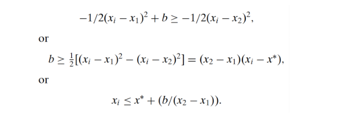

收录于合集

作品简介
【作者】 Susan C. Stokes，芝加哥大学政治学系教授，研究兴趣包括民主理论，民主如何在发展中社会发挥作用，分配政治和比较政治行为。
【编译】 宋翔宇（国政学人编译员，北京大学外国语学院本科生）
【校对】 缪高意、晋玉
【审核】 朱家羲
【排版】 张湘苹
【美编 】聂涵琳
【来源】 Stokes, Susan C. “Perverse accountability: A formal model of machine politics with evidence from Argentina.” American political science review (2005): 315-325. doi: 10.1017/S000305540505168 3.
.
期刊简介

American Political Science Review《美国政治科学评论》是一本创立于1906年的同行评议的学术季刊，涵盖了政治学的所有领域。其由剑桥大学出版社出版,是美国政治学协会的官方期刊。该杂志目前的主编是托马斯·科尼格（Thomas König）。2019年该刊的影响因子为4.183。
反向问责制：机器政治的形式模型
——来自阿根廷的证据
Perverse Accountability:
A Formal Model of Machine Politics with Evidence from Argentina
Susan Stokes
内容提要
本文讨论了政党购买选票的现象，即政党通过向选民提供特殊利益来换取他们的选票，从而调动选民的支持。但面对无记名投票下选民可以在接受利益后反悔这一问题，研究者观察到机器(machines)利用它们对选民社会网络的深入，试图绕过无记名投票，推断出个人的选票。作者提出“反向问责制”(perverse accountability)，即政党通过威胁要惩罚投票给另一个政党的人来影响人们的投票方式。作者把政治机器与选民间之间的战略互动视作具有单边不确定性的重复囚徒困境博弈。之后通过对阿根廷进行实证验证了这种博弈产生的假设——机器监控选民的能力、选民收入和意识形态立场对机器政治有效性会产生影响，最终得出政党更倾向于给予贫穷的消极反对者以奖励换取选票的结论。
文章导读
01
研究问题和选题逻辑
许多新兴国家都经历了向选举民主制(electoral democracy)的过渡；然而，这些体系中的政治往往仍然是特殊的、庇护的(clientelistic)和腐败的。这些新兴国家的政治与早期美国的机器政治(machine politics)极其相似。并且，今天欧洲先进民主国家的赞助(patronage)和购买选票(vote buying)的历史研究也在发展。机器政治的一个问题在于，机器如何防止接受奖励的选民不履行投票支持的协议？因为如果选民可以食言，那么机器就不应该浪费资源，庇护主义进而就会崩溃。但事实表明，庇护主义不仅没有崩溃，反而出现在很多国家。本文试图解释的第一个问题是，假如机器能够克服选民违约的问题，它将选择哪一类选民？第二个问题是，政党将通过什么方式来最大可能保证目标选民支持政党。本文通过阿根廷的实证研究，发现政党更倾向于奖励贫穷的消极反对者，并通过加强监管和渗入选民集体来保证最大限度的支持。
02
理论和文献回顾
詹姆斯·斯考特（James Scott 1969）观察到新兴国家的政治生活和美国早期的机器政治十分相似。他认为战后几十年来菲律宾、马来西亚特有的赞助、特殊主义和贪污腐败与19世纪纽约的Tweed机器和20世纪芝加哥Dawson机器十分相似。他进而提出了“比较视角中的‘机器模型’的轮廓和动力”，分析了许多向选举民主制过渡的新兴国家同时具有的特殊的、庇护的和腐败的政治。美国政治机器史学的发展和欧洲先进民主国家的赞助和购买选票的历史研究（Piattoni 2001）丰富了分析样本，提供了更丰富的经验理解政治机器。但是关于机器政治文献中的一个留待解决问题在于机器如何防止选民违反接受奖励后投票的协议。如果选民可以食言则政治机器就不应该浪费资源奖励他们，庇护主义就会随之崩溃。而现实则与之相反，许多有政治机器的国家也同时存在无记名投票。政治机器不仅没有在美国消失，而且在墨西哥、意大利和保加利亚也存在庇护主义和投票。而为了避免这样的问题，政治机器会将目标定为穷人，因为穷人收入的边际效用递减。
但是，并不是所有的贫困选民都会得到好处。形式文献(formal literature)认为机器以核心选民为目标，但本文认为机器的目标不是坚定的支持者(die-hard supporters)，而是未来选票不确定的选民。购买选票的做法会导致反向问责制，即政党知道或能够推断出个别选民在投票站做了什么，并以这些行为作为奖励或惩罚他们的条件。反向问责制对民主是有害的：因为它减轻了政府履行职责和提供公共产品的压力，阻止选民利用选举来表达他们的政策偏好，破坏选民的自主权。
在一些分配政治的形式模型(formal model)中，政治机器扮演重要角色。Dixit和Londregan（1996）模拟了两党试图动员既关注消费又关注意识形态的选民群体的策略。两党都会用奖励来吸引摇摆选民(swing voter)，但是，当一个政党与一群选民有着特别密切的联系时，这个政党就会把目标对准这群核心选民。政治机器的核心策略在于了解选民。Cox和McCubbins（1986）的模型中，机器—核心选民团体联系的关键特征在于，与其他团体相比，机器更确定核心团体如何对奖励做出回应。并且政党与选民之间密切的关系让政党对选民的反应有准确的判断。但是，这两个模型的问题在于，没有处理“承诺问题”(commitment problem)。他们都假设不存在“背叛”(renege)。本文则针对承诺问题，进行模型设计。
03
模型与假设
本文使用阿根廷的案例，提出两个假设并建立形式模型。
H1：机器能够有效地（尽管并非完美地）监控其成员的行为，并根据他们推断出的选票设定回报条件。
H2：双方都认为这种互动将无限期地持续到未来。

当奖励b大于0时，如果

选民会投给机器。
博弈的正则式如表1所示，b为机器支付奖励的成本，v为收到选票的收益
当没有奖励时，消极反对选民倾向于反对机器，但当收到奖励时，他们倾向于支持机器。如果对于机器来说获得选票的效用大于b，那么机器和消极反对选民就处于一个囚徒困境(prisoners’ dilemma)。表2给出了简化的双方收益矩阵。
换句话说，为了保持合作，选民在当前和之后的每个回合投票给机器并获得奖励的收益要不小于在当前回合背叛的收益加上（1）以(1-p)的概率躲避侦查并在之后的每个回合选择合作，或（2）以p的概率被逮到背叛并在之后的回合放弃奖励反对机器。
忠诚的选民不满足(2)中的情况，因为如图2，他们在中点左侧。直觉上来讲，如果忠诚选民想要从他们偏好的正当中获得奖励，在冷酷触发战略的条件下，他们要能在机器拒绝给他们简历上威胁反对政党。但这样的威胁不可信，因为政党知道，即使没有奖励，忠诚选民选择永远合作也比选择永远背叛要来的好。同样的，反对选民也不满足不等式(2)。尽管反对选民希望得到奖励，但机器并不能通过威胁保留奖励来保证反对派的选票，因为反对派更倾向于反对机器。
因此，消极反对选民成为了潜在的选票出售者(vote sellers)。这一结果背后的直觉是，与反对派选民相比，消极反对派选民可以可信地承诺为机器投票，以换取奖励；机器知道投票者永远合作比永远背叛要来的好。与忠诚的选民相比，消极反对选民能可信地威胁在未来通过投反对票来惩罚机器。
不等式(2)给出以下四种比较静态。
（1）当两党在意识形态上更靠近时，选民在决定投票时的利害关系就会减少，奖励的价值就会变得更加突出。
（2）当奖励(b)的价值相对于根据个人政策或意识形态偏好投票的价值增加时，购买选票的可能性就会增加。奖励对选民来说一定要很有价值。但它对机器的价值必须小于一张选票的价值。这表明，在收入边际效用递减的情况下，机器将瞄准贫穷的选民。
（3）机器监控选民的准确性越高，购买选票的可能性就越大(λ是p的增函数)。监测选民行为的技术和机器的组织结构的功能可以提高这种准确性。
（4）在机器可以准确观测的核心选民(core constituents)中，目标定位消极反对选民是最有效率的。
04
阿根廷的机器政治和购买选票
文本通过2001年12月和2002年1月在阿根廷三个省对1920名选民进行的调查来进一步验证假设。受访者被询问：是否收到奖励、奖励是否影响选票、是否曾寻求该党的帮助、当家庭困难时是否会寻求该党帮助。通过回归分析，收入（Income）、受教育水平（Education）、居住质量（Housing quality）与奖励显著为负，发现贫穷预测了庇护主义。富人受到奖励的影响为0.2%，而穷人受到的影响则为13%。私人投票（Ballot）与奖励显著为正，人口规模（Log population）与奖励显著为负，证明一个政党对选民的监督能力越强，它在收买选票方面的努力就越有效。
之后，通过询问受访者对政党看法，给出“very good”, “good”, “bad”, “very bad”四个选项，得出得到奖励和未得到奖励中持这四种看法人的比例。其中未收到奖励持“very good”的人是收到奖励持“very good”的人的3倍，即政党避开了强烈支持者。同时“bad”比“very bad”收到奖励更多。因此，政党更倾向于消极的反对者。
05
结论
本文对机器政治购买选票的现象进行了研究。通过将承诺问题纳入一个重复博弈过程，本文解决了机器政治与选民之间的“背叛”问题，在既有文献的基础上得出：机器可以通过将触角伸向选民集体来加强选举监控，并通过将目标定为贫穷的消极反对者来最大限度购买选票。使用阿根廷的例子说明了反向问责制，即政党监督选民投票、奖励选民支持、惩罚选民倒戈的能力才是维系机器政治的力量。
译者评述
本文在既有的关于机器政治和分配政治文献的基础上，通过将承诺问题纳入机器与选民的重复博弈之中，解决了机器政治面临的承诺问题。通过重复博弈的形式模型设置，得出了目标选民定位的区间以及效用的范围。之后借助对阿根廷选民的调查，进行回归分析验证假设，对机器政治购买选票的问题给出了新的解释。
但是，本文的假设依然过强。由于选民和政党候选人之间仍存在多级官员，并且如文中所说，同一社区的邻居进行计票工作，那么这就仍然存在极大的委托代理和承诺问题。掌握信息的人不一定有激励向上级如是回报。并且存在下级官员和选民联合隐瞒信息，获取奖励的可能。
同时，图三存在一定的问题。例如，对于持“very bad”态度的人，奖励的反而更多，这不符合前文中机器不奖励强硬反对选民的结论。对于持“good”态度的人，奖励更多，而对于持“bad”态度的人，奖励的却更少，这也就是文章中本身提到的问题，不符合前文政党更倾向于消极的反对选民的假设。只有持“very good”态度这一组，受到奖励的更少与文章结论相符。具体解释和修正可参考Nichter(2008)。
参考文献
[1]Nichter, Simeon. “Vote buying or turnout buying? Machine politics and the secret ballot.” American political science review (2008): 19-31.
文章观点不代表本平台观点，本平台评译分享的文章均出于专业学习之用, 不以任何盈利为目的，内容主要呈现对原文的介绍，原文内容请通过各高校购买的数据库自行下载。
添加 “国小政”微信
获取最新资讯


国政学人
支持学术公益与知识传播
微信扫一扫赞赏作者 __赞赏
已喜欢，对作者说句悄悄话
取消 __
发送给作者
发送
最多40字，当前共字
上一页 1/3 下一页
长按二维码向我转账
支持学术公益与知识传播
受苹果公司新规定影响，微信 iOS 版的赞赏功能被关闭，可通过二维码转账支持公众号。